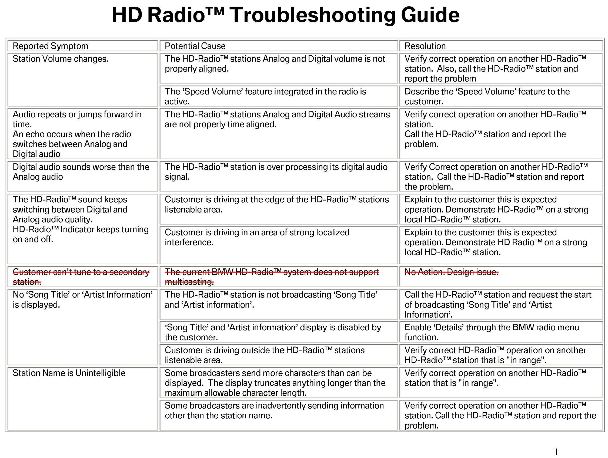

Audio System - HD Radio(R) Functionality/Diagnosis
SI B65 25 05Audio, Navigation, Monitors, Alarms, SRS
August 2009
Technical Service
This Service Information bulletin supersedes SI 65 25 05 dated January 2009.
[NEW] designates changes to this revision
SUBJECT
HD Radio(TM) - Functionality and Diagnosis
MODEL
[NEW]All models with factory-equipped HD radio(TM) (option 653)
Note:
Beginning with March 2007 production, all BMW models offer HD radio(TM) with multicasting, and HD radio(TM) can be ordered with Real Time Traffic Information (RTTI).
Important:
HD radio(TM) cannot be retrofitted. There is no retrofit kit and procedure available.
INFORMATION
The company iBiquity Digital Corporation is the sole developer of HD radio(TM) technology with input from radio broadcasters, consumer electronics and broadcast equipment manufacturers, automakers, retailers, and consumers.
iBiquity Digital's IBOC (In-Band On-Channel) Digital Audio Broadcasting technology provides for enhanced sound fidelity, improved reception and new wireless data services. This enhancement to AM and FM will offer tremendous growth opportunities for broadcasters, manufacturers, retailers and automotive manufacturers.
What does "HD" stand for?
Originally, the initials "HD" stood for "Hybrid Digital" because the digital signals were carried with the analog wave. According to iBiquity Digital Corporation, that has been changed and the letters "HD" now do not stand for anything. Some articles and news stories have erroneously assumed that "HD" stands for "high definition", which has contributed to the confusion between HD radio(TM) technology and high-definition TV.
The term "HD radio" is iBiquity Digital Corporation's trademarked name for their digital audio broadcasting technology, which has become the IBOC standard adopted for the United States.
How is HD radio(TM) different than current FM and AM radio?
HD radio(TM) is a new technology that enables AM and FM radio stations to broadcast their programs digitally, a tremendous technological leap from today's familiar analog broadcasts.
Because HD radio(TM) signals are digital, they aren't subject to atmospheric interference in the way that current FM and AM signals are. Background crackle and hiss are eliminated. The effect is similar to the difference between CDs and records.
How does HD radio(TM) sound?
Check it out www.hdradio.com/how_does_hd_digital_radio_sound.php
What is HD2?
HD2 is the term that multicasting stations are using for their secondary digital-only channel. Some stations are using this second channel to offer more specialized programming, such as classical opera, electronica, Latin hits, etc.
What happens if the HD radio(TM) signal is no longer available?
If the HD radio(TM) tuner loses the station's digital signal,it will automatically switch over to the analog signal broadcast at the same frequency. There may be a slight break in the sound when this happens. When the tuner is back in range of the selected station's HD radio signal, it will automatically go back to the digital broadcast.
NOTE:
This only happens on HD 1 radio stations (primary digital channel). On secondary digital-only channels (HD2) or any additional HD subchannels (HD3, HD4, etc.), the audio is muted when no digital signal is available.
On BMW vehicles, "Acquiring" and/or "No HD" is shown in the display to inform the customer.
BENEFITS OF HD RADIO(TM)
^ FM broadcasts have CD-quality sound.
^ AM broadcasts will sound as good as today's analog FM stereo.
^ Static-free without pops, hiss and fades
^ New data services~ such as scrolling text displayed on a radio screen with song titles and artist names
^ No subscription fees. It is FREE for consumers, just like today's analog AM and FM radio.
^ Easy transition for broadcasters and consumers by using the existing infrastructure and spectrum while, at the same time, preserving the existing analog service for as long as needed
^ Continue listening to local AM/FM stations on existing analog radios as well as on new HD radio(TM) receivers, with all the added services and benefits that HD radio(TM) offers.
FREQUENT CAUSES OF HD RADIO(TM) COMPLAINTS
Audio is muted intermittently when an HD2 or HD3 digital-only channel is selected.
^ This is normal operation, since there is no analog signal broadcast for that station.
The HD signal often switches back and forth and/or fewer HD radio stations are available at night.
^ Many smaller AM radio stations are required to sign off or reduce power sharply at sunset.
An "echo" sound can be heard during the switchover.
^ HD radio stations are NOT time-aligning their analog signals with the digital signals.
Sound switches between digital and analog audio quality.
^ Reception is at the edge of a listenable area.
Crackling or static can be heard when HD is inactive.
^ Signal transmission problems
Crackling or static can be heard all the time.
^ Poor antenna connections
^ Poor electrical connections (ground or power)
Environmental conditions
^ Driving through valleys or between tall buildings
DIAGNOSIS
Effective radio diagnosis starts with screening the complaint. When a customer complains about a radio problem, it is very important to screen such complaints (as explained above), prior to turning the car in for diagnosing and repairing.
1. Get a detailed description of the complaint from the customer, including the precise circumstances under which the problem occurs.
2. Whenever possible, the customer should be asked to demonstrate the problem.
3. If the problem is caused by external interference, ask the customer which stations or frequencies are delivering poor reception. This will help to determine whether the problem is location or distance-related.
4. Through the customer interview, try to determine whether the problem is intermittent or constant.
5. Determine whether the problem is weather or temperature-related.
Once all pertinent information relating to the complaint has been gathered, perform the following steps:
1. Verify the customer complaint and attempt to duplicate the problem. Find out if the problem occurs on AM band, FM band or both. Refer to the attached HD radio(TM) Troubleshooting Guide (updated).
2. On vehicles with rear window defogger/grid antennas, thoroughly clean the inside of the rear window with BMW Window Cleaner, using a lint-free cloth to eliminate any conductive coatings on the glass. The grids can easily be damaged by rubbing too strongly or using an abrasive detergent.
3. Check existing Service Information bulletins (refer to SI B65 01 04 "AM/FM Radio Reception Problems - Radio/Antenna Diagnosis") in order to determine whether a service procedure has already been developed for the problem in question. If an SI for the problem is available, troubleshooting can begin as described in that bulletin.
4. If no information can be found in existing Service Information bulletins, it is your responsibility to decide what the logical source of the problem might be, by troubleshooting the vehicle itself If the problem appears to be in a sound system component other than the radio - or perhaps some other component of the vehicle - the entire system should be diagnosed.
5. Through system diagnosis, it is possible to find things like a loose ground wire on the antenna, or a pinched speaker cable.
FUNCTIONALITY
HD radio(TM}
The HD radio(TM) system is designed to permit a smooth transition from current analog Amplitude Modulation (AM) and Frequency Modulation (FM) radios to a fully digital In-Band On-Channel (IBOC) system known as HD radio(TM). This system delivers digital audio and data services to mobile, portable, and fixed receivers from terrestrial transmitters in the existing Medium Frequency (AM) and Very High Frequency (FM) radio bands. It allows digital radio signals to ride the same airwaves as analog AM/FM radio. Broadcasters may continue to transmit analog AM and FM simultaneously with the new, higher-quality and more robust digital signals, allowing themselves and their listeners to convert from analog to digital radio while maintaining their current frequency allocations.
1. Stations bundle analog and digital audio signals (with textual data, such as artist and song information, weather and traffic, and more).
2. The digital signal layer is compressed using iBiquity's HDC compression technology.
3. The combined analog and digital signals are transmitted.
4. 4. The most common form of interference, multipath distortion, occurs when part of a signal bounces off an object and arrives at the receiver at a different time than the main signal. HD radio(TM) receivers are designed to sort through the reflected signals and reduce static~ hiss, pops, and fades.
5. 5. The signal is compatible with HD radio(TM) receivers and analog radios.
In much the same way that a portable CD player digitally stores a short passage of music in order to overcome any momentary interruptions, the interleaver approach, incorporated into IBOC technology, further enhances performance. By "caching" or storing the broadcast into short-term memory, the interleaver allows for the uninterrupted transition between analog and digital signal within the same channel, in order to avoid the drop-off that might occur due to a bridge or other obstruction. In order to deliver instantaneous tuning, the interleaver also seamlessly enables the initial selection of the analog signal and subsequent transition to the digital signal, once properly cached. Compression of audio data will increase transmission without losing sound quality.
By employing the above techniques incorporating multiple digital signal techniques, such as redundant sidebands, blend, first adjacent cancellation, and code and power sharing, iBiquity Digital's IBOC technology is designed to capture a superior robust signal within a station's coverage area. This ensures delivery of the benefits of HD radio(TM) technology.
Provided that sufficient signal strength is available, customers with HD radio(TM) receivers will receive CD-quality sound in the FM band, along with song title and artist information where available, and FM quality sound in the AM band (AM stereo), along with song title and artist information, where available. HD radio(TM) reception range is slightly less than the analog reception range. The HD radio(TM) receiver will revert back (known as a blend) to the analog signal at the edge of coverage. Also, when first tuning into the station, the analog audio will play first, and then the radio will blend over to the digital audio afier a short period of time.
Important:
The Federal Communications Commission (FCC), which regulates US radio transmissions, only allows transmitting of the HD digital signal with a radiated power of "1% of the effective radiated power". For example, if the effective radiated power is 600 watts, the radiated power for the HD digital signal is only 6 watts!
For a complete list of on-air and licensed stations, go to the iBiquity website:
www.hdradio.com/find_an_hd_digital_radio_station.php
Multicast
Multicasting is a big deal for radio stations and listeners alike. A radio station can now better serve its listeners. For instance, a public radio station can broadcast morning jazz music on one "channel" and morning talk programming on another "channel" (same radio station; same frequency on the dial; but multiple options for the listener). Commercial radio stations will be able to branch out into multiple formats - rock and country~ for example. Now consider the possibilities if all of the radio stations in an area have the ability to offer two or three channels for the listener to choose from.
In addition to duplicating their analog programming with an HD radio(TM) broadcast, stations can subdivide the digital portion of their signal. This allows a station to "multicast" - that is, to broadcast two or more programs simultaneously. Listeners might have a choice of say, a sports game or music.
Being digital only, these additional channels could only be received on an HD radio(TM) tuner. But just as cable TV allowed specialized networks to flourish, multicasting provides the potential for stations to offer more niche programming - ultimately giving the listener a greater variety of formats to choose from.
Finding an HD2 channel on the radio dial
While multicast channels today are commercial and subscription-free, consumers do need an HD radio(TM) receiver that can receive multicast channels. For the most part, to find new HD2 channels, listeners turn the dial from channel to channel in the same manner that they have always tuned in to their favorite radio stations. HD radio(TM) products detect digital and multicast station availability and tune to
these stations automatically.
Of the more than 1,100 stations across the country broadcasting with HD radio(TM) technology, more than 500 FM stations are offering a second (HD2) and, in many cases, a third (HD3) multicast channel.
For more information, visit: http ://www.ibiquity.com/hd_radio/hdradio_multicasting
ABOUT SIGNAL COVERAGE AREA AND INTERFERENCE
Useful coverage area
How far away from the radio station being listened to is it possible to receive an HD digital radio signal?
That depends on the local terrain, other radio stations in the area, and man-made interference. All of these things can affect how well a radio station can be received.
Each radio station has a local, distant and fringe coverage area defined by the Federal Communications Commission (FCC), which regulates US radio transmissions.
Local coverage is the area where the radio signal is strong, and almost any radio should get good or acceptable reception.
Distant coverage requires a good antenna; smaller portable radios or car radios may not receive the signal or have distortion.
Fringe coverage is the area where reception is possible only with a good stationary external antenna, if at all.
For more technical and overall information (location, coverage, etc.) on radio stations, go to:
www.radio-locator.com
An HD radio(TM) should get reliable digital signals in the local coverage area, and may get digital signals in distant coverage areas, depending on the environment. In fringe areas, radios usually don't receive digital signals because, unlike a traditional analog signal that fades out when traveling away from it, the digital signal will simply disappear when the signal isn't strong enough.
Note:
Interference can cause radio reception to vary significantly from one location to another~ even in the same area and/or region.
The antenna
Since HD radio(TM) technology utilizes the same frequencies as traditional AM and FM radio, the antenna system remains the same.
Note:
Therefore, the same problems that occur with normal AM/FM antennas are applicable for HD radio(TM) systems.
Many of the problems that occur with a car and not with a home stereo system stem from the differences between home and car antennas. The car antenna is often multi-directional for tuning in the best possible reception, and a home antenna always remains in one place.
On the other hand, the antenna in a car is much smaller. It sits close to the ground rather than being high in the air and it is always in motion, with rotational movement from the antenna and natural obstacles affecting reception distance.
Given the difficult job car antennas are asked to perform, should problems with AM/FM reception be encountered by customers, it is most likely not the fault of the BMW radio.
The stations the customer is able to receive will depend largely upon signal strength. This varies depending upon the time of day, the season and other factors.
FM reception
FM reception - which can include the car's local weather band station - usually has better sound quality than AM reception. However, unlike AM waves, FM signals are weaker, delivering reception for only about forty to fifty miles, under even the best conditions.
HD radio(TM) receivers Will have slightly less reception range than the traditional FM signal. The radio will blend back to FM analog at the edge of the digital coverage area.
FM signals transmission situation
With FM signals, several problems can occur as a result of the way in which these signals travel and their relative lack of strength.
HD radio(TM) signals are generally immune to the traditional FM analog problems.
"Dead Spots"
The first of these problems is called a "dead spot". If a direct FM wave and a reflected FM wave reach the car antenna at the same time, they will cancel each other out.
These "dead spots" will be eliminated with the HD radio(TM) receiver.
"Multipath"
The second problem specific to FM signals is called "multipath". This is similar to a dead spot in that two stations are fighting for the same general frequency. A "multipath" is an area in which a reflected FM signal is occupying a frequency very close to that of a direct signal. If the reflected wave is stronger than the direct wave, the result will be a fluttering sound as the car passes through that area. This happens very often in inner-city areas.
HD radio(TM) signals are designed to be robust in "multipath" environments, eliminating this fluttering effect. HD radio(TM) receivers are designed to sort through the reflected signals and reduce static, hiss, pops, and fades.
iBiquity Digital's IBOC technology overcomes multipath interference and sources of noise through the use of proprietary coding and power-combining techniques. This proprietary approach to error correction utilizes digital processors and powerful algorithms to constantly compare the quality of the two digital sideband transmissions. It combines them to deliver additional power gain whenever possible, and when not possible, seamlessly switching to the more powerful of the two.
"Fading"
The third problem often encountered with FM signals is called "fading". "Fading" occurs as the car is leaving the effective reception range of the FM station. The signal becomes weak and fuzzy. Because the range of most FM stations is only about forty miles, fading may be experienced quite often during long trips - and even in a motorist's own neighborhood - if a particular FM station is broadcasting forty miles away or more.
HD radio(TM) receivers have slightly less reception range than traditional FM signals. At the edge of coverage, the radio will blend back to the analog signal.
"Station Swapping"
Another problem often heard when listening to an FM signal is called "station swapping". An FM receiver is designed to search for and lock onto the strongest signal in any area. However, if there are two stations in a given area that are broadcasting on very close frequencies, the radio may "swap" back and forth between these two stations, depending on which signal is stronger.
The HD radio(TM) audio will not be affected by "station swapping". The range of the digital signal may be slightly reduced in this circumstance.
"Sound is skipping"
The radio sound skips back and forth.
This happens when the HD radio(TM) station is not time-aligning its analog signal with the digital signal.
Stereo broadcasts
Stereo broadcasts have an effective range of only about forty miles - unlike mono broadcasts, whose effective range is usually about fifty miles. This means that if someone is listening to an FM stereo broadcast and the car is thirty miles away from the transmitter, interference may be experienced. With a mono broadcast, on the other hand, such interference will not be heard until the car is approximately forty to fifty miles away from the transmitter.
HD radio(TM) signals are stereo up until the point that the signal blends back to analog at the edge of coverage. This is usually occurs somewhere between the effective stereo and effective mono range of the station (in this case, 42 - 45 miles away from the transmitter).
This is normal operation, but the customer could complain of losing the stereo surround sound intermittently.
Note:
Sport events are not broadcasted in HD radio(TM) digital audio quality; they are still in mono (analog signal).
AM reception
AM radio waves generally deliver a powerful, continuous signal over more than a one-hundred mile radius from their point of origin - even in mountainous or inner-city areas.
This is because AM waves are dispersed as ground waves, which follow the curvature of the earth, and space waves, which actually bounce off the upper ionosphere, creating a downward route to the automobile, no matter where it is driven. This factor is much better at night, and also tends to be better in winter than in summer.
Note:
Since they are in the same frequency band, AM HD radio(TM) signals are affected the same way as traditional AM signals. Their coverage area is slightly reduced compared with that of AM analog signals.
AM signal transmission situation
The problem with AM reception is that it is highly susceptible to electrical interference from sources such as power lines, electrical storms, or even from nearby vehicles.
HD radio(TM) signals (since they are digital) are generally more immune to this type of interference, but can still be affected by strong electrical interference.
In this instance, the radio will revert to the analog signal.
Important:
In the United States, due to the large number of stations, many smaller AM stations are required to sign off or reduce power sharply at sunset, in order to reduce interference with distant stations.
The FCC prohibits AM radio stations from transmitting HD digital quality after sunset.
This is due to the greater distances that AM signals can travel at night. At night, a strong HD digital signal from one location could interfere with distant radio stations that are on a similar frequency.
Some AM radio stations are even required to reduce the power of their analog signal at night for the same reason.
For AM signals, the single most important factor for good reception is the time of day.
AM signals almost always get absorbed by the diffusion layer of the ionosphere during daylight hours. As a result, all AM signals received during daylight hours will arrive by ground wave, making reception of signals over a few hundred miles away unusual in daylight.
Note:
It is possible to have poor or no reception in the "Weather Band" mode.
ATTACHMENTS

view PDF attachment B652505HD_Radio_Troubleshooting_Guide.